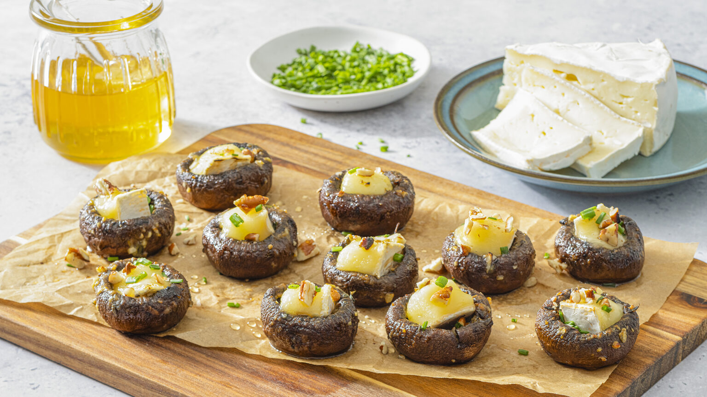

Yummy Brie-Stuffed Mushroom Caps!
Roasted with a slathering of garlic-thyme butter, these simple Brie-stuffed mushrooms make an irresistible appetizer that's sure to get any party started.
Appetizer
Serves 6-8 People
Ingredients
- 1/4 cup (60 mL) Ontario butter, melted.
- 2 tbsp (30 mL) finely chopped fresh thyme.
- 1 tbsp (15 mL) Dijon mustard.
- 3 cloves garlic, minced.
- 1/4 tsp (1 mL) salt.
- 1/4 tsp (1 mL) black pepper.
- 24 medium mushrooms, stemmed.
- 8 oz (125 g) Ontario Brie wheel, cut into 24 chunks.
- 1/2 cup (125 mL) finely chopped toasted pecans.
- 2 tbsp (30 mL) finely chopped fresh chives.
- 2 tbsp (60 mL) liquid honey.
Instructions
- Preheat oven to 400°F (200°C).
- In small bowl, stir together melted butter, thyme, Dijon, garlic, salt and pepper.
- Arrange mushrooms, cavity-side up, on parchment paper–lined baking sheet. Brush mushrooms with garlic butter.
- Roast for 15 to 20 minutes or until tender.
- Arrange a piece of Brie into each mushroom. Sprinkle with pecans and chives, and drizzle with honey.
- Roast for 4 to 5 minutes or until cheese has melted. Serve hot.
- Substitute Ontario Brie with Ontario feta cheese if preferred.